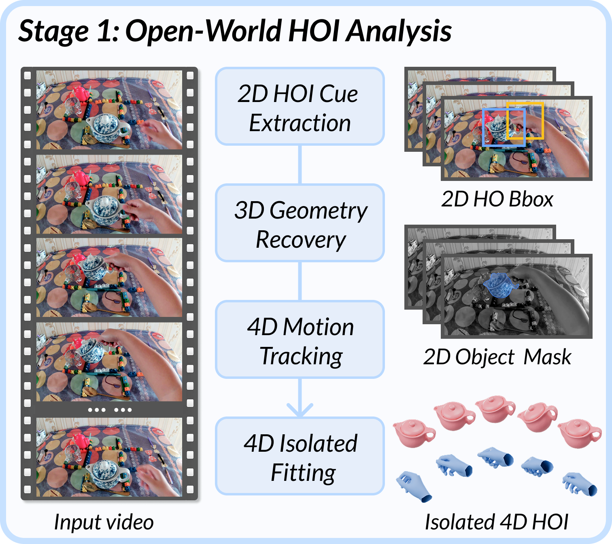
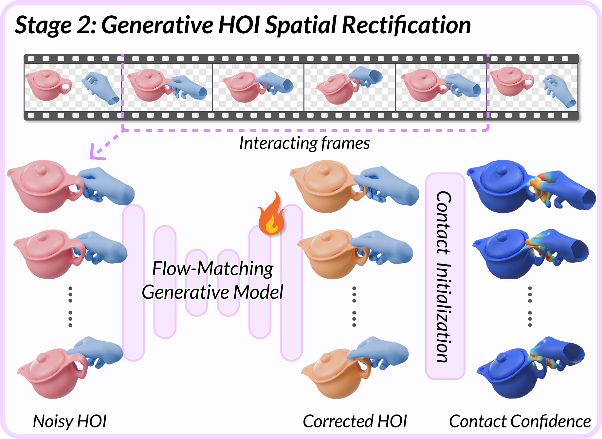
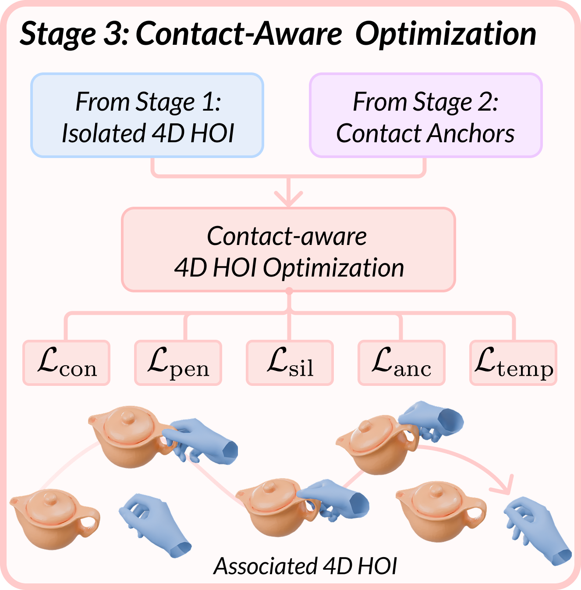

We ask whether everyday open-world monocular videos can be turned into reusable 4D interaction primitives: articulated hand motion, object shape with 6D pose over time, and the when/where of contact. We present CHOIR, a Contact-aware HOI Reconstruction framework that uses contact as an explicit coupling signal between hands and objects. CHOIR initializes a coarse 4D HOI sequence from open-world visual priors, rectifies hand-object placement with a generative HOI spatial rectification module, and refines the result through contact-aware joint optimization. Experiments on controlled and challenging videos show that CHOIR improves object reconstruction, physical plausibility, and temporal consistency over state-of-the-art methods.
Method Overview



Our Representative Examples
Explore representative sequences with synchronized input video, reconstructed 4D geometry, and rest-pose contact predictions. Click on the above arrows to browse different representative examples.
Qualitative Comparison with SOTA Methods
More Qualitative Results of Our Method
Bimanual Cases
Our method generalizes to challenging bimanual scenarios — two-hand two-object and two-hand one-object hand–object interaction. Drag the 3D viewer to explore the reconstruction from any angle.
Our code and training dataset will be released.